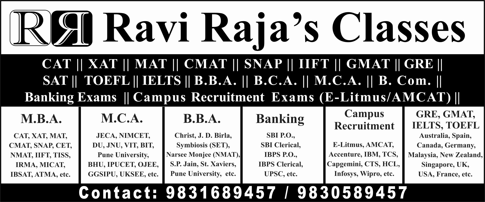

Ravi Raja's Classes
We provide Classes for all M.B.A. ENTRANCE EXAMS (CAT, XAT, MAT, CMAT, IIFT, SNAP, NMAT, IBSAT, MHCET, MICAT, etc.) and for GRE, GMAT, IELTS, TOEFL, SAT, CAMPUS RECRUITMENT TESTS (E-Litmus, AMCAT, TCS, Infosys, Accenture, Deloitte, Wipro, Cognizant, etc.), B.B.A. / B.M.S. ENTRANCE EXAMS (IPMAT, SET, NPAT, DUJAT, Christ University, etc.), HOTEL MANAGEMENT EXAMS (NCHM JEE, etc.), Law Entrance Exams (CLAT / AILET SET, MHCET, etc.) and M.C.A. ENTRANCE EXAMS (JECA, NIMCET, JNU, VIT, etc.) And BANK AND GOVERNMENT EXAMS (Bank P.O., Bank Clerical, Railways (RRB), SSC - CGL, Civil Services (UPSC), etc.)
Testimonials
Ravi Sir's Classes is the ideal learning ground for all competitive exams. The structured programme, long one to one sessions, comprehensive and updated question banks, flexibility with timings help a lot to handle the stressful preparations. However, it’s his individual attention and support that distinguishes him from all the other "coaching centres. It enables you to spend time on concepts which appears tough to you whereas save time on those where you have a good grasp. I still remember getting a 5 marker quants question straight from his concept classes in my XAT paper. May be it made all the difference. Sir, you are a lot better then what I have expressed here. I am limited by my vocabulary to thank you enough.
Ravi Raja Sir adds a personalized touch to the coaching. I wrote CAT thrice – the first two years I registered with two different brand names. However, the third time when I actually made it through with a percentile of 99.90, Ravi Raja Sir was my coach. His exhaustive list of Quant problems gave me the confidence required to ensure a 100 percentile in this section. Basically he taught me approaches to all the different kinds of problems that I could be tested in each topic. The verbal training was also good. In my opinion, one has to be one’s own master when honing the verbal aptitude. No amount of coaching can help you if you do not spend enough time reading – books, magazines, news articles and NOT facebook / whatsapp etc. Ravi Sir’s tips on what to read and a general discussion on trending topics did help me a lot. Overall I would highly recommend Ravi Sir’s Classes to anyone aspiring to be a B-School entrant – especially over coaching institutes.
Ravi Raja’s classes provides you with all the tools necessary to crack CAT and other major entrance exams. It builds your basics from the ground up and ensures that your strengths are further strengthened and your weaknesses are weakened. The one-to-one coaching methodology is very apt for those who want that special focus in key areas and develop a 360 degree purview of the subject matter. A plethora of study material is provided from various sources which ensures that when the D – day approaches, you are armed with the knowledge of how to tackle all types of problems. Ravi Sir ensures the concepts are made crystal clear and there isn’t any iota of doubt left which helps students at all levels to reach their true potential. Highly recommended for those who want to take their MBA entrance prep to the next level.
I joined Ravi Raja's Classes for GMAT coaching and was very happy with the classes. Ravi Sir's classes provides a lot of study material designed to prepare a student thoroughly for the test. Along with this material, online mock tests are also provided. The class is taught in the same was as any other class, that is, first a topic is taught in class and all concepts are explained and then students are expected to practice for the study material given. But, the class comprises of a relatively small number of students allowing Ravi Sir to give each and every student enough personal attention and clear each and every doubt. The class timings are also flexible and this allows the students to come and practice according to the student's convenience (except for the class in which a new topic is taught). All said, I personally had a good experience and the classes helped me score a 690 on my GMAT in a short span of time.
My introduction to Ravi Sir happened last year through a brother of mine and his fellow colleague at one of the most renowned CAT coaching centres in Kolkata. As a young Comp Science student in St. Xavier's, I too had dreams to bell the CAT, and my brother suggested that Ravi Sir was the best bet to do that. Years later, I had found that I had not only met a brilliant teacher but a mentor in him as well. Ravi Sir's teaching methods are novel and his approach to problem solving are amazing. The materials that are provided by him, are but problems that his years of experience have identified to clarify the concepts of understanding a particular topic. Above all, as a teacher he is exemplary in his patience to explain a concept to a curious student. I can vouchsafe about the fact, that over the years as several batches of students who have been tutored by him have made it to the hallowed portals of the IIM's and MDI's, each and everyone of them would recall Ravi Sir with reverence because he is not just a mere professional, but a person for whom teaching is his vocation as well his avocation, who revels in the success of his students through sheer hard work and dedication that he gives for them. Therefore, I can assure you that Ravi Sir is a teacher par excellence and a guide who can fulfill your dreams of clearing as difficult an exam like CAT.
Sir it was great being your student, the classes especially the Maths really helped me improve my speed. That booklet had hundreds of questions of all the chapters solving them helped clearing the concepts and the techniques helped too. I remember sitting in your classes for hours and solving them and you attending to all my doubts and giving me tricks to shorten the same. About the portal, the question set were really robust, covered all sorts of questions of various difficulties. It’s because of that I could crack CAT I believe. Also sir, you attended to all my doubts even on WhatsApp. I will be really grateful for all your help and guidance.
Studying at Ravi Raja’s Classes has been an absolute enriching experience for me. I joined the institute as someone who was terrified of Mathematics, but within a couple of months, the subject became my strength. Be it in terms of Ravi Sir's excellent lectures or the flexible class timings, be it the all – embracing study material or the comprehensive test series, every detail to make us CAT – ready was well taken care of by at Ravi Raja’s Classes. From the exam tips to the shortcuts to save time to the words of encouragement, Ravi Sir's constant guidance is what has helped me get calls from good B – Schools. Sir certainly made QA and LRDI simpler. He had been very patient and was literally available 24 x 7. The GDPI faculties have also been remarkable. Without a doubt, I'm glad I joined Ravi Raja’s Classes for MBA Entrance Preparations.
Joining Ravi Raja's Classes, was one of the best decisions I made in my journey of preparing for MBA entrance examinations. We were motivated to give our best, from the very beginning till the time, we entered the premises of our dream business schools. A student has the flexibility to attend the classes as per his schedule which does not prohibit him from pursuing an internship / job and attending his classes. The key to ace these exams is to prepare regularly and Ravi Sir helped us in doing just that by providing us with a time table for daily tasks and monthly targets that kept on upgrading as the exams drew closer. This helped us in preparing for our exams in a structured manner and we could keep track of our performances. Concepts are taught in a lucid manner and doubts are solved on the spot, which helps you in completing your syllabus on time, thereby providing with you ample time to practice mock tests. The standard of the mock test papers were up to the mark and quite similar to the actual test papers. The GD/PI preparations start a month in advance from the date of your actual college interview, which gives you enough time to prepare for the next step. We had guest lecturers, who are an alumni of esteemed institutes like IIM Ahmedabad and are panelists themselves for leading business schools of India. They have immense knowledge and experience and their views on various subjects and the current affairs of the world, helped me profoundly in my actual GD/PI. Over this one month of GD/PI classes, the classes are held almost everyday, so you do not miss out on a day's preparation and by the time you appear for the interview, it just seems like another mock session. Ravi Sir’s coaching doesn't end here, He is there with you until you make it to the b – school of your choice. Your teachings and the memories will stay with me for life Sir and I am blessed to be your student.
My experience at Ravi Sir's classes has been really great. The way he teaches is very methodical and systematic, going at the pace of the students. Also, he is a really patient teacher who gives genuine career advice to his students. The effort he puts in all of his classes is really appreciative and very few teachers do that. I'm glad that I made the right choice by joining his classes for CAT/XAT.
My experience at Ravi raja classes has been amazing. Two things that separate it from other coaching institutes are the personal attention and the easy approach to problems. The way you planned discussion classes for every assignment gave me enough ye to understand the topics and even if I was unable to complete those, listening to the doubts of others added a lot of value. Constant feedbacks and motivation from your side, added to whatever little motivation I had. I really learned a lot from you, and I'm glad I chose to take classes here. I was able to get through a college this year, then it was all because of your help. Thank you, sir!
It was an amazing experience at Ravi Raja's classes since the beginning. Ravi sir's strongest characteristic is that he is an extremely dedicated and responsible teacher. By far, through school and college, we all have come across a number of teachers who have made us what we are today. Not denying their contributions, Ravi Sir's contribution and commitment towards his students is unparalleled. Ravi sir's mode of teaching is unique from the other coaching centres of the same field. When I enrolled my name here, my friends joined other coaching centres. As the months passed, they started talking about how huge their strength of each class used to be, and how individual attention was overlooked in all of those coaching centres. Here, I was proud to tell them that in Ravi Sir's classes, though batch classes were held, but if any particular student was unable to follow his lesson or felt uncomfortable in batch classes, he/she/they could easily go up to Sir and ask him to teach them the whole lesson once again personally at his coaching centre. Ravi Sir never hesitated to agree to the same and instantly asked him/her/them when they could come individually and take the lesson from him. He is there in the coaching centre everyday from 9:00 a.m. to 9:00 p.m. and anyone can visit his coaching centre and can take personal lessons from him or simply sit and practice numericals on the already completed chapters. His flexibility with his students is remarkable. Ravi sir's expertise in the subjects of Data Interpretation, Data Sufficiency, Quantitative Aptitude and Logical Reasoning is incomparable. For the English section too, the faculty here is just as efficient. Verbal Faculty is truly a great English teacher and is also adept in the language herself. The best part of the total experience here at Ravi Raja's Classes was the Group Discussion and Personal Interview (GDPI) sessions held towards the end part, once the students have finished appearing for the competitive exams (CAT, XAT, SNAP, NMAT etc.) and start to receive interview calls from the B – schools. Most of us have not faced the interview panel up till graduation, so it is only obvious to feel nervous and shaky whenever the thought of facing the board of interviewers comes to our mind. I can share my own experience here – I was the most shy, introvert and nervous prospective interviewee one can imagine. Soft spoken as I was since childhood, I was definitely not one of those outspoken or extrovert children. I knew absolutely nothing about facing an interview. With scanty General Knowledge (which is one of the key requirements in this process) and weak aptitude in answering known questions when asked, I shivered at the thought of public speaking (extempore), participating in group discussions or going through a personal interview. I give tremendous credit to the GDPI classes held at Ravi Raja's Classes coaching centre for helping me overcome all my weaknesses in this field. All faculty members for GDPI classes, for conducting mock interviews, mock group discussions and mock extempores to prepare us, were brilliant – put shortly. Each of them are either IIM – A, IIM – C alumni or public speakers by profession. These classes are a must – attend here, at Ravi sir's coaching. Genuinely, they are too helpful for students like me to miss. It is definitely a cherry on the cake, following his flawless training for appearing for the written exams (CAT, XAT, SNAP, NMAT etc). That's all that I felt across these two years since I enrolled my name in Ravi Raja's Classes for taking the management entrance examinations. A heartfelt gratitude towards Ravi Sir and everyone else here at the coaching centre for their invaluable help and contribution towards our lives. Thank you for everything.
I was dejected after my first attempt at CAT and then I came to Ravi Raja’s classes with a hope to be able to score well. As we know the preparation phase for the exam is the toughest part in the whole process. With constant support from Sir, both academically and emotionally, made me achieve desired results. To be honest and unbiased while giving this testimony – Sir has a pedagogy which involves teaching Quantitative Aptitude and Logical Reasoning and Data Interpretation in a lucid and simple way to crack the exam. He thinks from point of view of students while teaching and is able to make things easier to grasp. With his experience in the field and continuously giving the CAT exam himself for the past several years, he is updated with the style of questions and is equipped with his never ending course materials. Sir, provided us with a comprehensive set of Logical Reasoning and Data Interpretation and Quantitative Aptitude questions of varying levels of difficulties and complexities prepared me to not only to answer questions in the CAT, but also interpret situations logically in life, in general. Moreover, the most important part of the whole journey of CAT preparation at Ravi Raja’s Classes has been a memorable one. Even stressful situations passed by, with the ease and fun. I truly believe if someone follows and pursues the preparation course with perseverance and honesty, he/she will be able to achieve best of the results.
My experience at Ravi Raja’s classes started around the month of June when I realised that with som other institute (where I had enrolled myself before joining Ravi Sir’s Classes), I would not be able to score good marks. It felt like for me to focus on the studies a personal attention was required and not a class strength of 50 where I would hesitate on asking of any doubts. I really admire Ravi Sir for the amount of time and hardwork which he puts for the students. Every topic is covered at least 2 times in a group session and if you join late, Sir also teaches you a topic on an individual basis which is really helpful at times. The classes timing were so flexible for minimum 5 hours and with CAT approaching a time of 10 hours. Sir wouldn’t mind being called for the smallest of doubt and would be very friendly while approaching. In my experience, the place felt more like home than my actual home. Love the way Sir treats and a kind of mutual respect between the student teacher which goes on. Overall my experience was superb and I would recommend it to every person preparing for CAT.
First of all, I would like to thank you for your guidance and support that I have got through one of the most prestigious and premier colleges of the country. Your classes have been simply amazing and the friendly relationship you maintain with your students is simply outstanding. I have seen the students feel so relaxed and comfortable working with you in the classroom. Since the batch is small, the best part is the one on one interaction with you. Anyone having any kind of doubts can quickly ask you straight away. This doesn't generally happens in the other renowned institutes. Example : In other institutes there are 3 – 4 different maths teachers where the topics are distributed amongst themselves. The best part is the flexibility a student has. During crunch time, the student is willing to stay the whole day in your classroom practicing and practicing endlessly. The study materials – If one can finish all your study materials, there is no one who could stop him/her to crack the CAT/XAT/SNAP/NMAT etc. The materials are just BRILLIANT !!! I'm sure the other institutes don’t even provide this much study materials, like the way you do. The location of your classes is also just perfect.
It was a couple of years back, when I came to know Ravi Sir through one of my friend and that’s how I joined his classes. All I knew from my friend that he was really a good teacher and who gave a lot of attention to his students. Since I had never ever studied in a group, I was a little worried and tensed about joining his classes, as it would be difficult for me to keep up with the class. When I first meet him I shared my problem with him that I would face. He not only assured me of his cooperation to help me out but he even gave me an option to come and attend his classes before I joined him. What I could observe during his classes was he gave each and every student equal attention. And if any of the students was not able to grasp what he taught he was not hesitant to repeat it. I did not face any kind of problem that I used to fear of joining the group classes. Though we were studying in a group but each and every student was getting individual attention. There was no time boundation to the class. He had given ample of extra classes and doubt clearing sessions. He would clear all the doubts that each one of us had. One of the greatest quality that he has, which makes him so good with his work is his PATIENCE. The most important quality that makes one a GOOD TEACHER, which is quite difficult to find these days in teachers. He always has a smile on his face. He never gives up no matter what it takes. He has a very positive nature and always keep encouraging his students and keeping their moral high. Whenever we had any doubt he was always reachable on his no. The only negative thing I can think of is he keeps skipping his lunch for his classes, which he still has not given up. All of you who know Ravi Sir would definitely agree to what I have mentioned about him. I was really fortunate to have you as my teacher. Thank you for all your help and support and wish you a very successful life ahead.
Success in one’s life just doesn’t come by being hard working and passionate about achieving the dream. It comes along with a perfect mentor and for me it was Ravi Raja Sir. Like most I too dreamt of being in the best B – School and preparing from the best institute. I had been a student at another institute with a big brand name (neither mentioning the name nor demeaning the institute for my failure in my first attempt) but the fact that I didn’t get the perfect individual guidance as I needed. So with him Individual guidance, competitive and healthy environment made my journey smooth. I was blessed for he helped me overcome my fear for the Quantitative Section in these examinations. If Quants or LR or DI is what you want to master this is the perfect place to be in. Sir can make the most twisted problems appear so simple and today cause of him I like Quants. He wouldn’t just make sure you get your concepts and basics right but he would even make sure you practice equally. He also helped me in planning my studies and cleared doubts in my weak areas repetitively. Even at midnight Ravi Sir is just a buzz away. His constant monitoring and analysis of the different tests, specific exam focused approach helped me strategize better one test after the other. In hindsight if I have to start my preparation for CAT again it’s going to be him. I recommend each one of you to give yourself a chance to be with him. If in 3 months I could get results I am sure you too can and this was possible only cause of HIM. I owe my success to Ravi Raja SIR.
Ravi Sir, it’s been more than a year since I have taken classes from you and left for further studies but the matter of fact is even now we have good memories of your teachings. The best part about you Sir was that you not only emphasized on studies but you understood that every student was different and every student had their own strength and weakness and groomed us according to our strengths. We were given as much time as we wanted without a second thought. You were not just a teacher but also a friend throughout the teaching journey. Thanks a lot sir for everything and keeping in touch. :)
Ravi Sir is a very dedicated teacher for his students and wants his students to excel in life. He does not look at teaching as a profession but as a passion and puts his heart and soul in it. A very lively teacher and friend and with a great deal of enthusiasm.
I joined Ravi Sir's Classes with the aim of preparing for the CAT and GMAT. He came highly recommended by my friends who were extremely appreciative of his flexible teaching style and his ability to explain complex topics in easy to understand terms. And after my experience, I have to say I agree with them wholeheartedly and would highly recommend joining Ravi Sir for MBA/GRE/GMAT or any other Entrance exams. I was good with maths till class XII but had been out of touch for 8 years. Hence my skills were rusty and even basic concepts like percentages and averages became stumbling blocks. Additionally, while earlier I could perform complex calculations in my head easily, now it took me some effort to even add and multiply large numbers. I knew that I had the skill, but it needed serious polishing. I am extremely grateful to Ravi Sir for being extremely patient in the early days when my confidence took a serious beating because of how hard I was finding it to get going. He explained simple tricks that would make mental calculations much faster and easier and I truly wish I had known these tricks in school, they would have made my life so much easier. Once I had shaken off the rustiness, it then became a matter of how much practice I could put in. This was the area where Ravi Sir's Classes excel and what sets him apart from other institutes. He gives total freedom to the student to come to the class at their convenience and spend as much time there as required. Whichever time of the day I would come in, Ravi Sir would be available and surprisingly fresh and able to teach. In spite of there being multiple students present, he ensured that all of us got individual attention. His wealth of experience in teaching shows when he can anticipate your mistakes and correct your logic even before you have worked them out yourself. Having been involved in this field for so long, he can offer sound guidance and provides you with the most up to date and timely information. Mathematics for these exams is really a matter of practice and logic because there is very little that will be asked that you would not have studied previously. Ravi Sir will make sure that you have more than enough practice to be able to tackle any problems that may come in the exam. In my case I started with mid – 60 percentiles in the mock CAT exams but within 2 – 3 months I was getting 85 – 90th percentile in Maths. English had always been my strong suit but Ravi Sir ensured that Maths did not become a weakness. I gave the GMAT in September, 4 months after I started attending the classes and scored a 740 (97th percentile). Because of my high GMAT score I didn't sit for any other exam but I'm sure that with further guidance from Ravi Sir I would've cracked most of them.
Sir, you are not just a very good teacher but also an amazing mentor. When I was taking guidance for you for the preparation of different entrance exams, you were like a blessing to interact to who always inspired and motivated me and most importantly made me laugh during those tough times. I feel very lucky to have found you when I had no idea how would I ever be able to deal with maths but you made it all so simple for me. You are a very caring teacher who takes his students’ goals as your own goals and help them to achieve it. It is very difficult to find a teacher like you who always stands by and is willing to help students not professionally and emotionally when they are in need of support. I feel really blessed to have met you. Thank You so much Sir for everything. Regards
My cousin introduced me to Ravi Sir when I was looking for CAT tuitions. I must say it was a good decision of mine to join Ravi Raja’s Classes because Sir does not take teaching as a profession. For him teaching is a passion. The best thing about Sir is that he never teaches by seeing the clock. Rather he always lets the students sit at his tuition center for hours who face problems studying at home (even if it is a national holiday or a weekly holiday). He has always helped students with their queries even if it is late at night. He prepares the students by making them take exams regularly both online and on paper and by discussing the short – cut techniques and strategies to crack the exams.
Ravi Raja Sir, as the name suggests, is the King of Mathematics. You get all the personal attention you expect without fail. He is available 24 × 7 for any doubt you have. Extremely helpful and never gets angry no matter how many times you keep asking him to explain a doubt you have. He is the coolest teacher indeed.
Working in a well known mnc bpo, I never had the confidence that I could ever go beyond that. I gave it a shot after meeting Ravi Sir. He said "bilkul possible hai" !!! I resigned my job in August and with very less time in hand, Ravi Sir made sure that I am well prepared for all the exams I aim for. I secured a decent score in the exams I had appeared for but the real deal was about to begin – GDPI. He guided through every step and like a pro, he took care of my MBA end – to – end. Whatever I am or ought to be, I owe a major share to Ravi Sir.
I had a great experience studying under the guidance of Sir Ravi Raja for entrance exams. All the required study materials for the exams were provided and it was in accordance to the various exams and their changing patterns and difficulty levels. The materials are updated every year. One of the best things about Ravi Raja’s Classes is that one to one teaching is provided and personal attention is given to each student and this helps the student to learn properly. Doubts are cleared one a one to one basis. These facilities are generally not found in institutes with bigger brand names. Sir guides the students to appear for online and offline mock exams and students can take sample question papers to analyze them and correct their mistakes. There is no time limit to sit at the institute and study. It depends on the student as to how long he/she wants to sit there and study. According to me it is one of the best places to join for exam preparations.
The timings of the class are very flexible. Sir is always available to solve ones queries. No matter how many times one asks the same question sir never gets irritated. Extremely friendly environment. The materials and tests provided by Sir covers all the topics. If one misses any class sir is ready to help out and do that topic again with that particular student.
To begin with, I am a computer engineer who worked with different companies like Infosys limited across different cities in India and for many subject/degree I have had to consult/admit in a number of institutes. Many a time I took private tuition also. For MBA there are ‘n’ number of institutes with big brand names in Calcutta but I personally will not recommend any of them because based on my personal experience, before taking admissions these institutes were willing to do everything for me and promised a lot of things but after enrolling, I hardly got help from them as per their commitments made to me before joining. They are very professional and teach in huge batches and thus unable to pay attention to every single student. As far as Ravi Sir's Classes are concerned, I can tell that it's mind blowing. Ravi Sir is not only the best math teacher but the best teacher I have ever come across in my life. He can change your view about math and under Ravi sir you will love spending hours learning the subject. For almost every problem Sir will show you 2 – 3 ways to solve it. You can adopt the one you like and you understand the best because in CAT or other competitive exams speed is what matters. As far as the materials are concerned, I would say that almost each and every type of problem is covered in Ravi Sir's material, as Sir himself has prepared the material and if you can complete solving the materials that he provides, no one can stop you from getting into the top B –Schools. Sir takes care of each and every student personally and is always available for his students irrespective of the time of the day. The worst thing about studying at longer stretches is that it gets monotonous and boring but I can assure you that you will enjoy each and every second when Ravi Sir teaches you and enjoy learning in the same way he enjoys teaching. You can surely go for Ravi sir's Class and after joining you will understand how fruitful it is and I highly recommended it for students who want to clear these different competitive exams like CAT/XAT/GRE/GMAT/BBA/MCA or even Campus Recruitment Tests for different multinational companies.